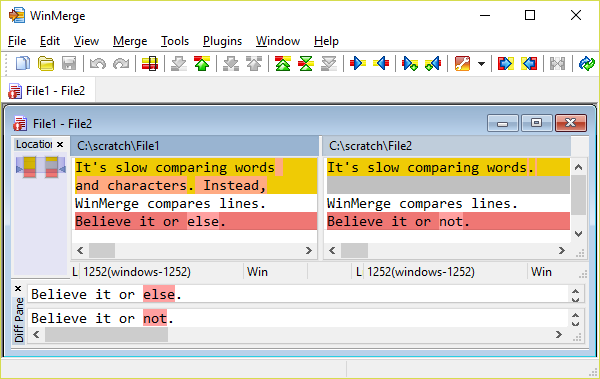
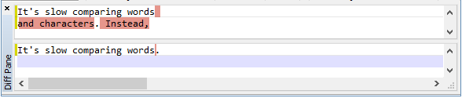
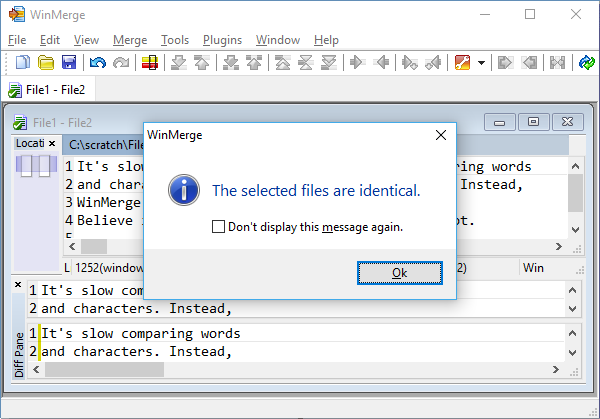

This topic describes how WinMerge detects and displays differences within text files, and demonstrates simple file comparing and merging operations. See Overview of file comparing and merging for related information about hex files.
We usually compare two files that are related in some way, such as two versions that were edited at different times, or by different people. If you examine two such files you can usually see some similar areas, and also identify several types of differences: different characters and words, different lines, even entire blocks of text that are different. But trying to understanding all the differences between two files by scanning them in your favorite editor can be tedious and error-prone. Specialized difference/merging tools like WinMerge are designed make this work more systematic and efficient.
A simple difference utility that most people have used is a spell checker: it systematically steps you through a document, highlights words that are different from those in its dictionary, and helps you resolve each spelling problem. However, looking only at characters and words is not an effective way to understand differences between multiple files. For this reason, many difference utilities use lines as the basic unit of comparison instead.
WinMerge also uses lines as its basic unit of difference. Words and characters are not treated individually in comparing and merging operations. To illustrate, consider two files that are identical except for one line that is different. If the two versions of the line have four words that are different and one version has an extra space, then we say that the file has one difference, not five.
If it's quicker to compare lines than words, sometimes it's also useful to treat an entire block of lines as a single difference, instead of comparing one line at a time. As we will see later, detecting multiple-line differences makes merging more efficient too.
This section offers a simple example that demonstrates how to compare line differences between two files in WinMerge:
-
Using a text editor, create two files with the names and contents shown here, being careful to preserve the words and line breaks exactly:
File1:
It's slow comparing words and characters. Instead, WinMerge compares lines. Believe it or else.
File2:
It's slow comparing words. WinMerge compares lines. Believe it or not.
-
Start WinMerge. For example, double-click the WinMerge desktop shortcut.
-
In the Select Files and Folders dialog, specify
File1as the Left file andFile2as the Right file, then click . The File Compare window displays the two files in the left and right File pane, like this:The elements are described in more detail in Comparing and merging text files. Here are some features you should notice in this example:
- Number of differences
-
The message in the status bar at the bottom of the WinMerge window tells you that two differences were detected.
- Difference colors
-
Difference blocks are marked with the difference background color (gold, by default).
Line differences can be enabled to mark changed text within differences blocks, using the word background color (light yellow, by default).
Identical lines are unmarked: they have white backgrounds, like the third line in the example.
- Blank lines
-
Notice that in the left comparison pane, the second line has text: the other pane has a blank gray line in the same location. This blank line does not exist in the
File2source file, so what is it doing in WinMerge?WinMerge inserts one or more gray blank lines in one version of a difference when the other version has more lines. These empty gray lines do not represent blank lines in the source file; they are only placeholders in the display. The purpose of placeholder lines is to keep the left and right versions of differences vertically aligned. Thus in our example, the text,
WinMerge compares lines, appears side by side in the Comparison window, even though they are on different lines in the source files. This makes it easier to compare differences in WinMerge than in a conventional editor.![[Tip]](images/tip.gif)
Tip One consequence of the blank lines is that both panes in the File Compare window always display the same total number of lines, even if their source files do not.
Now that you understand how WinMerge detects and displays differences, you can use the comparing functions effectively, as shown in the next steps.
-
Click in the toolbar (or press Alt+Enter). If this button is not enabled (for example, if your cursor is in a different line), click First Difference (or press Alt+Home) instead.
When you select a difference, the two versions are loaded in the Diff pane. The Diff pane confirms which lines are included in a difference, and lets you examine them in isolation from the rest of the file. In our example, Difference 1 clearly has two lines.
 -
Click in the toolbar (or click Alt+Enter). This jumps over the identical line (which is not a difference) and selects the last line.
You have reached the end of the file and had a chance to examine every difference. This was a trivial example — there were only two differences — and there are other ways to compare differences in WinMerge. But it demonstrates the efficiency of using the WinMerge navigation controls.
The purpose of merging is to combine changes from two files into one file. Merging extends the concepts and functions used in comparing operation: please read the preceding section before beginning this section. In addition to detecting differences between two file versions, we resolve the differences and save the result in a single target version.
Merging files makes concurrent development possible, and it is a common task in team environments. For example, suppose you and another person want to add code to the same program file at the same time. You both begin with an identical copy of the file, but during development you create separate versions that are not identical. At some point, the two versions must be merged into one version that preserves the changes from each contributor.
Merging can be prompted (or even initiated) by version control systems like Subversion and ClearCase. For example, your version control system might prevent you from submitting changes to its repository because of merge conflicts. A conflict can occur if someone else checked in a different version of the same file while you were working on your version, and the version control system was not able to automatically merge the differences. When that happens, you might need to merge the conflicting versions before trying again to contribute your version. Many systems have integrated difference and merge tools, but you might prefer to use WinMerge instead.
Just as with comparing, you use WinMerge's toolbar controls (or keyboard shortcuts) to systematically step through the differences. Resolve each difference by copying either its left or right candidate to the other side. When you have resolved all the differences, WinMerge lets you know that all differences are resolved (the versions are identical), and you are done merging.
This short exercise demonstrates how to use the controls in the File Compare window in a systematic way to merge the simple files shown earlier:
-
Click in the toolbar to select the first difference. If this button is not enabled, click instead.
-
Click to merge difference 1 from
File1toFile2. InFile2, notice that the single difference line is replaced by the two lines fromFile1, and the gray blank line is now gone. -
Click to select Difference 2. This is easier than finding and selecting the difference yourself. It's especially useful if you want to step through all differences without accidentally missing any.
-
Click to merge Difference 2 from
File2toFile1.The message that the files are identical tells you that the merge is complete:
 -
Click to dismiss the message. The status Difference message changes from
Difference 1 of 1toidentical. -
Press Ctrl+S to save your changes.
While very simple, this example demonstrates a basic methodology that you can use to step through a comparison of any length, merging each difference one by one until you have the result that you want.
You control where your merge result is preserved. The WinMerge File Compare window does not have a separate result pane, as some merge tools do. So the simplest strategy is to save your changes to one or both source files. Press Ctrl+S at any time to save the current changes to both files; alternatively, click → or → to save only one file.
To write to a third file instead of either source file, use → . For example, your target file might be the difference or conflict file generated by a version control system.
Similarly, in the WinMerge command line, you can leave both source
versions unchanged by using the optional outputfile
argument, as described in Command line.